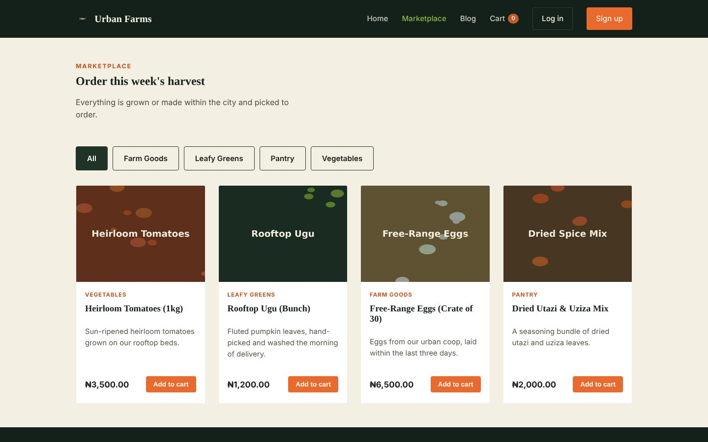
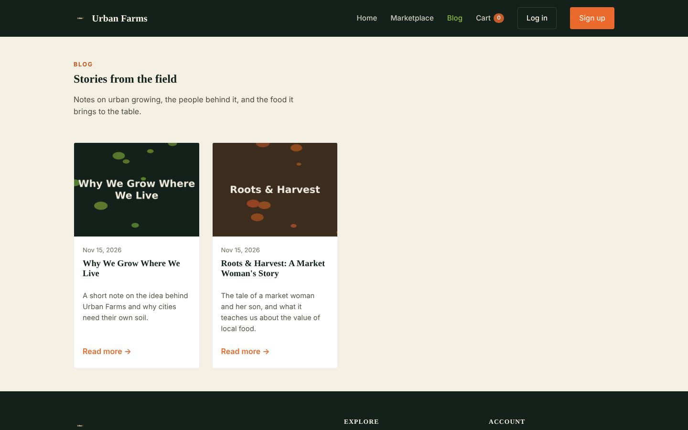
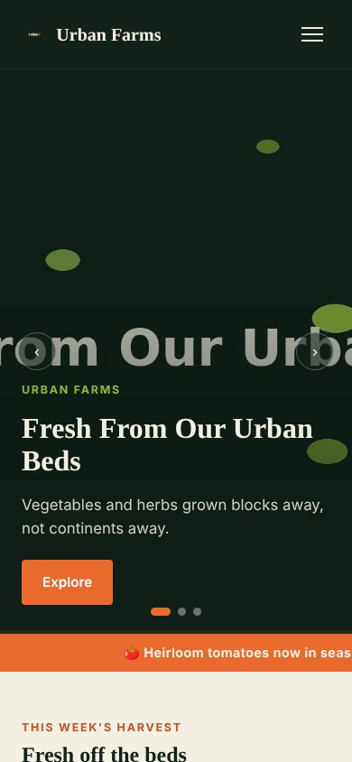

← All work
Case study · E-commerce & blog
Urban Farms
A complete website for an urban farming business: a marketplace people can order from, a blog, shopper accounts and an admin panel the team can run on their own.
RoleDesign & full-stack development
StackHTML, CSS, JavaScript, PHP, MySQL
PaymentsPaystack, PayPal, cash
AdminRole-based access

The home page: hero slider, announcement strip and this week's harvest.
The brief
The business needed one place to show what it grows, tell its story and take orders, without calling a developer for every new product or blog post.
What I built
- Marketplace: product grid with category filters, product pages, AJAX add-to-cart, cart and checkout.
- Blog: listing and single-post pages, with an image gallery in the admin editor for inserting pictures into posts.
- Shopper accounts: registration, Google sign-in, mandatory email verification before checkout, and order history.
- Security: a self-hosted CAPTCHA on sign-up and login, with no external API key needed.
- Payments: cash, PayPal and card through Paystack, each switchable from the admin panel.
- Admin panel: role-based accounts. A super-admin creates staff admins and grants them access to posts, products or orders.
The design
The look comes from my Urban brand colours: deep charcoal-green, warm orange and fresh green on cream, with a serif headline font for a grounded, farm-to-table feel.

The marketplace, with category filters and prices in naira.

Blog listing

Home page on mobile